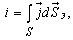

6.1.1. Неразрывность электрического и магнитного полей
Из курса физики известно, что электрическое и магнитное поля тесно связаны между собой. В природе существует единое электромагнитное поле, а чисто электрическое и чисто магнитное поля являются лишь его частными случаями. Магнитное поле во всех без исключения случаях создаётся движущимися зарядами (в т. ч. вращающимися вокруг атомов и смещающимися в диэлектрике) или токами.
Переменное магнитное поле обладает свойством создавать (индуктировать) электрическое поле. Линии напряженности этого электрического поля нигде не начинаются и нигде не кончаются - они замкнуты. Переменное электрическое поле обуславливает электрический ток – явление направленного движения носителей электрических зарядов. Принцип непрерывности (замкнутости) электрического тока гласит, что электрический ток сквозь взятую в какой угодно среде замкнутую поверхность Sэ равен нулю, т. е.  где - вектор плотности полного тока (проводимости, переноса и смещения).
Но электрическое поле окаывает магнитному полю такую же услугу. Переменное электрическое поле создаёт магнитное поле. Линии магнитной индукции всегда непрерывны; они нигде не имеют ни начала, ни конца. Другими словами, магнитный поток сквозь любую замкнутую поверхность Sэ равен нулю, т. е. (магнитный поток, входящий в замкнутую поверхность, равен магнитному потоку, выходящему из этой поверхности).
Таким образом, изменяющиеся электрическое и магнитное поля индуктируют друг друга.
Взаимное индуктирование электрического и магнитного полей было открыто двумя великими учёными XIX в. Фарадеем и Максвеллом.